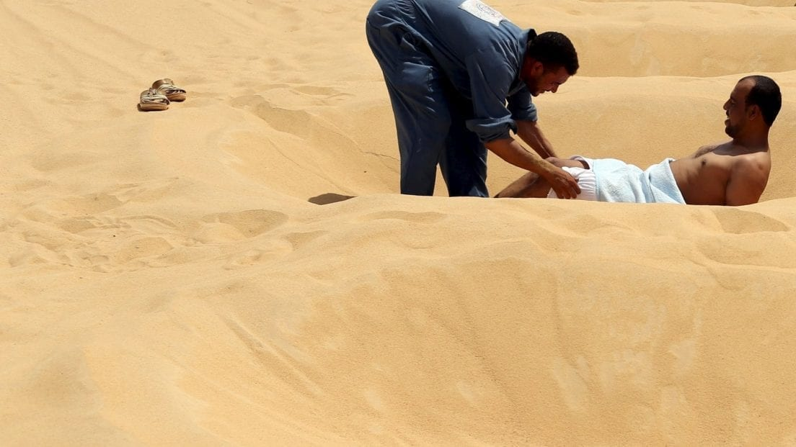
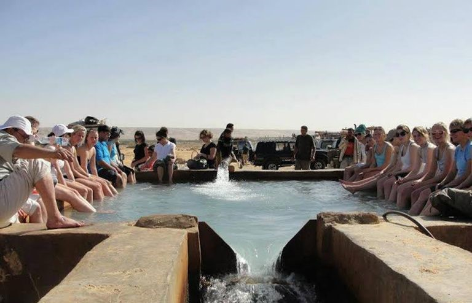

- ASWAN :
-
Aswan is one of the most important medical tourism destinations in Egypt and the world due to the interest in treating various diseases and treating arthritis in particular, using traditional therapeutic methods using hot desert sand.
Many scientific researches proved the validity of the Aswan atmosphere in the treatment of chronic diseases due to the high levels of ultraviolet radiation and low humidity, reaching 43.4% during the period from December to March, while the percentage in England during the same period ranged between 75% to 100%.
Sunshine all year round with dry weather an ideal climate for the treatment of rheumatic diseases such as bronchitis, asthma and chronic kidney inflammation

- BAHARYA OASIS :
-
In the Bahariya Oasis, there are about 400 springs of mineral water and sulfur, warm and cold, which scientific research has proven the therapeutic value of those eyes in rheumatic diseases and rheumatoid arthritis to become one of the most important spa treatments in the world because it combines dry moderate weather and sunshine throughout the year, one of the most important sulfur springs in Egypt.
The most important therapeutic sand places in Egypt
Many scientific studies have shown that the sands of Egypt contain desert sand dunes with healing properties when the body or the part that contains pain in the body is buried for certain periods. The results were impressive in many diseases such as (rheumatoid arthritis, spinal pain and rheumatism).

- KHARGA OASIS :
-
It is located in South Assiut and contains deep wells such as Bulaq Wells and Nasser wells with lots of therapeutic benefits. According to laboratory analysis, it is proven that these wells contain mineralized water, which is beneficial to treat kidney stones, skin diseases, rheumatic diseases, digestive system disorders, etc

- SIWA OASIS :
It is the most visited natural treatment spot in Egypt because it contains natural 230 freshwater springs and natural flowing 1000 wells. Mount Dakrur is a famous mountain there which is used in the treatment of rheumatic diseases.